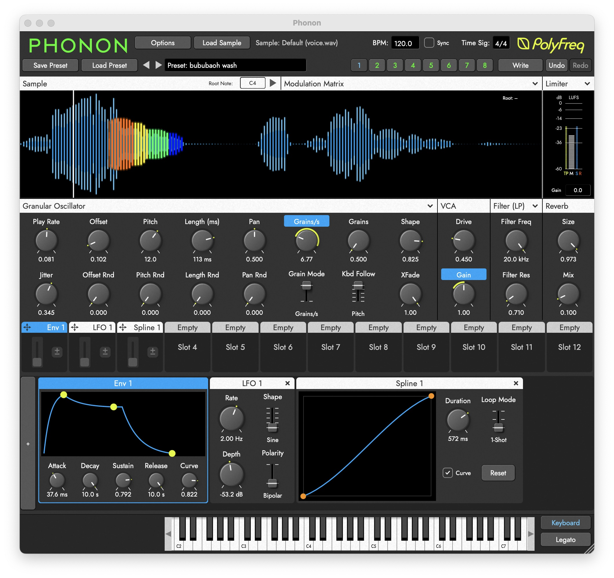

ครึ่งปีแรกของ 2026 ถือเป็นช่วงที่วงการซอฟต์แวร์เสียงคึกคักมากผิดปกติ ทั้ง synth ตัวดังออก version ใหม่ที่รอมานาน ปลั๊กอินฟรีคุณภาพดีออกมาหลายตัว และเทรนด์ AI เริ่มแทรกเข้ามาในรูปแบบที่น่าสนใจกว่าที่หลายคนคาดไว้ รวบรวมข่าวที่น่าติดตามมาให้แล้วครับ
Serum 2 — 11 ปีที่รอคอยมาถึงแล้ว
ข่าวใหญ่ที่สุดของปีนี้คงหนีไม่พ้น Serum 2 จาก Xfer Records ที่ Steve Duda ใช้เวลากว่า 11 ปีพัฒนาต่อจากตัวแรก ของที่ได้มาไม่ใช่แค่ update ธรรมดา แต่เป็น synth ใหม่เกือบทั้งหมด ฟีเจอร์ที่เพิ่มเข้ามาหลักๆ คือ Multi-sample support ที่ให้โหลดเสียงเครื่องดนตรีจริงเข้ามาในรูปแบบ SFZ, filter type ใหม่อีก 11 แบบ, arpeggiator และ clip sequencer ในตัว รวมถึง effects bus หลายตัวแยกกันอย่างอิสระ ผู้ที่มี Serum ตัวเก่าอยู่แล้วได้รับ upgrade ฟรี ส่วนคนใหม่ราคาอยู่ที่ $189
PolyFreq Phonon — Granular Synth ที่น่าจับตา

ในโลก granular synthesis มี PolyFreq Phonon ออกมาช่วงต้นมิถุนายน เป็น polyphonic granular synthesizer 8 voice ที่เน้นการ modulate แบบลึก รองรับ grain สูงสุดถึง 256 grains ต่อ voice พร้อม drag-and-drop sample loading และ root note detection อัตโนมัติ ตัว synth ให้ texture ที่ไม่เหมือน granular synth ตัวอื่นในท้องตลาด เปิดตัวราคา $89 (ลด 33% ช่วง launch) น่าสนใจมากสำหรับคนทำ ambient, cinematic หรืองานเสียง evolving
Phase Fiasco Annulus — Resonator ฟรีที่อิง MI Rings
สำหรับคนที่รู้จัก Mutable Instruments Rings โมดูล Eurorack ชื่อดัง Phase Fiasco Annulus คือ plugin เวอร์ชั่นฟรีที่ได้รับแรงบันดาลใจจาก Rings โดยตรง ออกเมื่อ 12 มิถุนายนที่ผ่านมา มี 6 algorithm อิงจาก MI Rings แต่ละตัว 8 voice กระจาย stereo field พร้อม effects chain ในตัว ไม่มี knob ไม่มี preset — ออกแบบมาสำหรับ sound designer โดยเฉพาะ ดาวน์โหลดฟรีบน Windows และ Mac
Meaw:Chain — AI Plugin เริ่มเข้ามาแบบที่น่าใช้จริง
หนึ่งในเรื่องที่น่าสนใจในปีนี้คือ AI plugin เริ่มออกมาในรูปแบบที่ practical มากขึ้น Meaw:Chain ของ Safari Audio แตกต่างจาก AI plugin ทั่วไป เพราะมันไม่ได้สร้างเสียงแทนคุณ แต่ช่วย design signal chain โดยดูจากปลั๊กอินที่คุณมีอยู่แล้วในเครื่อง แล้วแนะนำว่าควรเรียงลำดับยังไง ใช้ตัวไหนกับงานแบบไหน ราคา $59.99 ช่วง intro จนถึงสิ้นมิถุนายน (ปกติ $89.99) รองรับ VST3, AU และ AAX
เทรนด์รวมของครึ่งปีแรก
ถ้ามองภาพรวม ปี 2026 จนถึงตอนนี้มีสองแนวโน้มชัดเจน แนวแรกคือ hybrid synth ที่รวม wavetable, granular และ spectral processing ไว้ในตัวเดียวกัน กำลังครองตลาดและแทบทุกค่ายใหญ่ออก synth ในแนวนี้มากขึ้น แนวที่สองคือปลั๊กอินฟรีมีคุณภาพดีขึ้นมากอย่างเห็นได้ชัด บางตัวไม่แพ้ปลั๊กอินราคาหลักพัน นักดนตรีและ producer ที่งบจำกัดมีตัวเลือกที่ดีขึ้นกว่าเดิมมาก
สำหรับคนที่กำลังติดตามว่าควรลงทุนกับปลั๊กอินตัวไหนในปีนี้ Serum 2 คือตัวที่ตอบได้ชัดที่สุดสำหรับคนที่ยังไม่มี Serum เดิม ส่วนคนที่อยากได้เสียงใหม่โดยไม่เสียเงิน Phase Fiasco Annulus น่าลองมากครับ เดี๋ยวจะมีรีวิวและ deep dive ปลั๊กอินเหล่านี้ตามมาอีกในเร็วๆ นี้
KVR Audio คือฐานข้อมูลปลั๊กอินที่ครอบคลุมที่สุด อัปเดตข่าวการปล่อยปลั๊กอินใหม่ทุกวัน พร้อม review และ forum จากผู้ใช้จริง